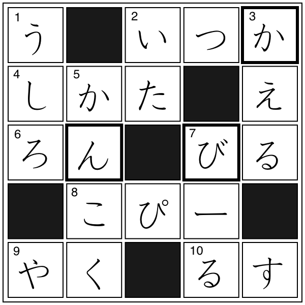

クロスワード
解答
クロスワード

【→
問題
〔
PDFファイル
〕
】
太枠の文字を組み合わせてできる単語
かびん（花瓶）
▼
かんび（完備）
▼
かんび（甘美）
※
▼
は１級相当以上の単語
例文
ガラスの花
瓶
(
びん
)
に花をさす。
冷暖房を
▼
完備しています。
▼
甘美な音色に耳を
▼
傾
(
かたむ
)
ける。
※
▼
は１級相当以上の単語
単語リスト
語(読み)
漢字／原語
分類
発音
中文意思
▼
は１級相当の単語と漢字、
▽
は１級リスト外の漢字を示す
うしろ
後ろ
0
いた
板
1
かえる
▽
蛙
動物
0
かんこく
▽
韓国
国名
1
ビール
beer
bier
（オランダ語）
飲み物
外来語
1
いつか
五日
0
しかた
仕方
0
ろん
論
1
ビル
building
外来語
1
コピー
copy
外来語
1
やく
役
2
るす
留守
1
かびん
花
▼
瓶
0
ページの先頭へ↑
←ひとつ前に戻る
目次へ
トップページへ